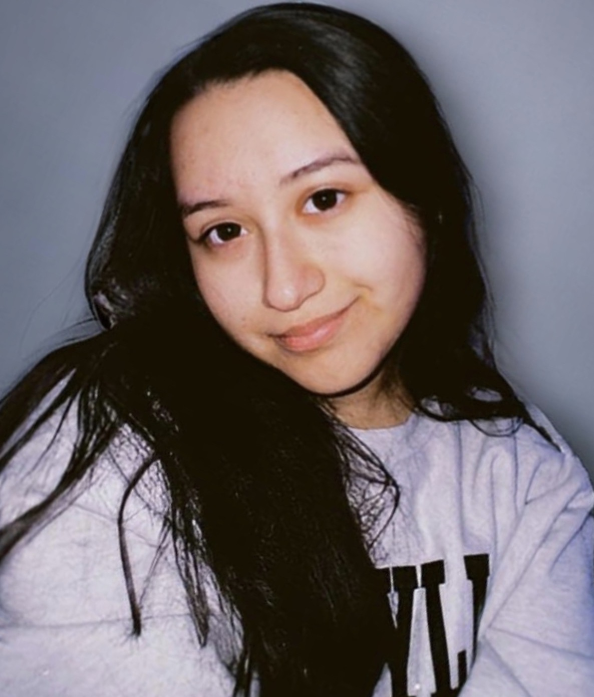

Journalism Portfolio
Dariana Guzman
Hi! I'm Dariana Guzman, a journalism student at the University of Maryland, College Park. I enjoy reporting on community issues, events and politics.
While most of my work consists of my writing, I’m also very passionate about videography and filmmaking! My goal is to pursue a career in journalism as a videographer, telling stories through compelling visuals.

About
I’ve contributed to student publications including The Diamondback and La Voz Latina, where I report on community topics and produce content for both written and digital platforms.
As a bilingual journalist fluent in English and Spanish, I’m also interested in telling stories that allow me to reach different communities and perspectives.Experience
I have reported on campus issues, community topics and current events while conducting interviews and researching stories. I have also produced video interviews and digital content for social media platforms.
Skills
My writing experience has helped me develop the ability to write clearly and concisely using AP style while working under tight deadlines. I also have experience editing video and using motion graphics to create more engaging visual content through Adobe software such as Premiere Pro and After Effects.